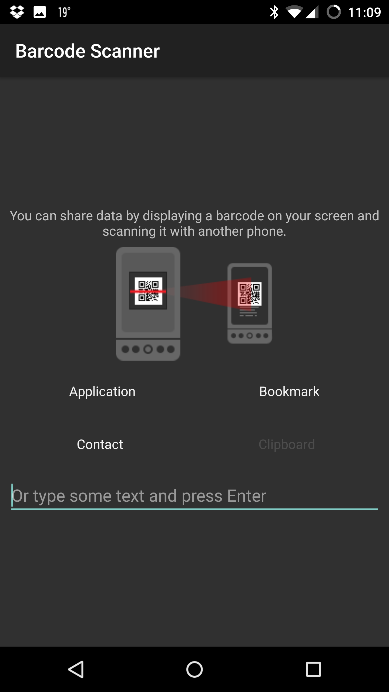
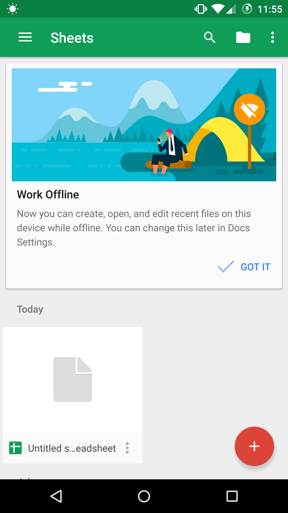
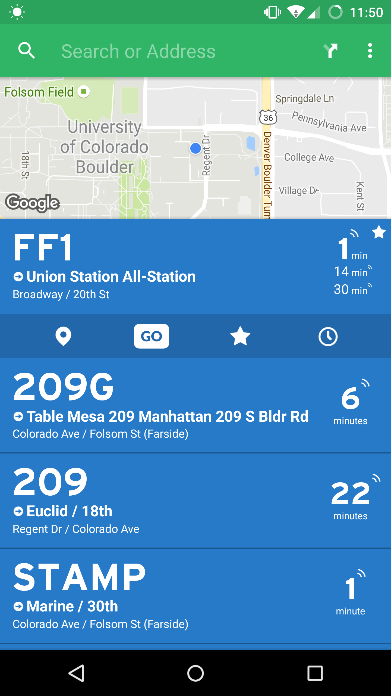
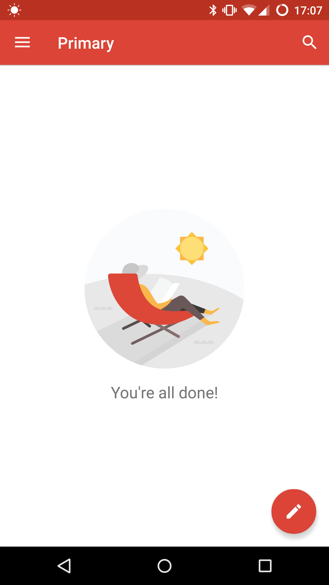
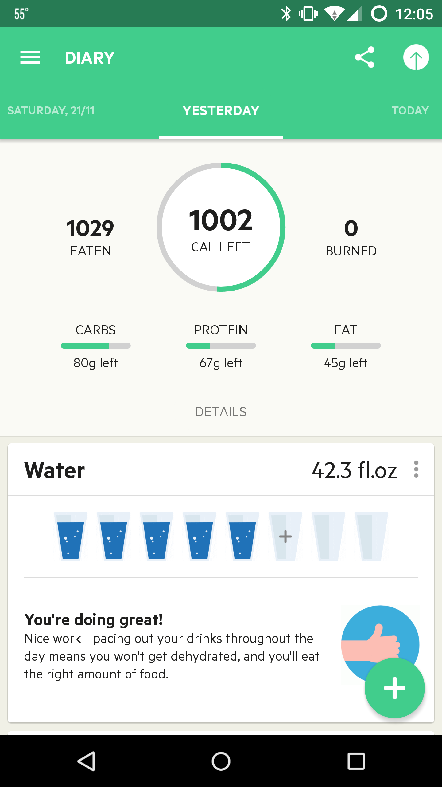
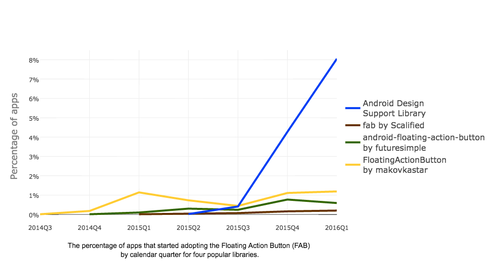
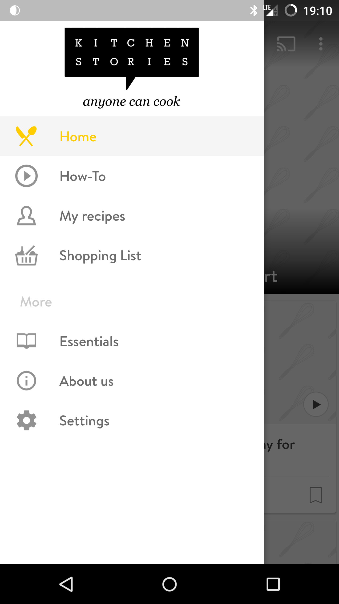

A Deep and Longitudinal Approach to Mining Mobile Applications
Khalid Alharbi
Ph.D. Dissertation Defense
November 11th, 2016
Digital Marketplaces
Mobile Applications
Apps' data is a valuable source of information
Mining Listing Details
- Sentiment analysis
- Topic analysis
- Predicting apps behavior
- Clone detection
- Spam filtering
- Causal impact analysis
Mining Visual Design
- Visual aesthetics
- Design demographics
- Design evaluation
- Design examples
- Design patterns
- Accessibility
- Privacy & security issues
Mining Source Code
- Static program analysis
- Mining software repositories
- Quality assessment
- Clone detection
- Privacy & security issues
Prior research efforts have been largely constrained to one view of analysis and a single snapshot in time.
Despite the wealth of information that exists in apps' data, it remains largely unutilized and has not been widely used to address critical issues concerning the development and design of applications.
Longitudinal Approach
Observe the dynamics of apps over time across multiple levels
Visual Design
Longitudinal Approach
- Do new design concepts get adopted immediately by developers or at slow pace?
- Are there any factors that may have contributed into a sudden increase or decrease in adoption?
Single-Snapshot Approach
- Did apps use a specific design concept at a single point in time?
- How many apps used a design concept?
Accessibility
Longitudinal Approach
- Have developers been doing a better or worse job in making their apps more accessible?
- If there’s an improvement, has the improvement been steady, accelerating, or plateauing?
Single-Snapshot Approach
- How many apps followed best accessibility practices?
- What is the percentage of apps with accessible content at a single point in time?
Privacy
Longitudinal Approach
- Do apps tend to request fewer or more permissions over time?
- Are developers becoming privacy-conscious or non-privacy-conscious over the years?
- Do developers ask for more permissions to use in new features or included libraries?
Single-Snapshot Approach
- What is the average number of requested permissions?
- What are the percentage of apps that requested a high number of permissions?
- What are the most requested permissions?
Deep Approach
Deep and structural indexing of apps across multiple levels (listing, UI, code, libraries, backend providers)
Sentiment Analysis
UI
Code
Privacy Analysis

Accessibility Analysis
Layout XML file:
<ImageButton
android:id="@+id/edit_img_button"
android:contentDescription="Edit" />
<ImageButton
android:id="@+id/camera_image_button" />
Source code file:
ImageButton cameraImageButton = (ImageButton) findViewById(
R.id.camera_image_button);
cameraImageButton.setContentDescription('Take a picture');
As we come to recognize the value in mining apps with both a deep and longitudinal perspectives...
- Challenging to model large and heterogeneous data
- Difficult to collect historical data
- Hard to observe changes
Thesis Statement
The goal of this work is to enable a more in-depth analysis of mobile applications and gain insights into various aspects of their design and development processes as they evolve over time.
Research Questions
- RQ1: What are the benefits of the deep and longitudinal approach to mining mobile applications?
- RQ2: How can we enable deep searching and mining of mobile apps over time?
RQ1.1: What could a deep and longitudinal approach achieve in UI design mining?
Mining Design Pattern Changes:
A Pilot Experiment*
* Collect, Decompile, Extract, Stats, and Diff: Mining Design Pattern Changes in Android Apps
Khalid Alharbi and Tom Yeh, MobileHCI 2015, Honorable Mention Award ☆
UI Design Patterns
UI Design Patterns Are Always Evolving
How can we observe and quantify the changes?
A Data-Driven Approach
- Collect apps and their subsequent versions
- Decompile apps to their nearly original form
- Extract a comprehensive set of features
- Stats compute statistics on extracted features
- Diff compute the difference between app versions
Collect
- Over 18 months
- Tracked 24,436 unique apps
- At least 2 versions per app
- Collected 56,349 APKs
Decompile
Leveraging existing reverse engineering tools to decode apps into their nearly original format , which result in the app byte code and the original layout XML files.
Extract
| Listing Details | Title, description, reviews, category, price, date published, ratings count, rating, install size, downloads count, permissions, what’s new. |
| Visual Design | Layout directories, layout files, view group containers, view elements, relationships, drawable resources, UI text resources. |
| Behavior | API invocations, manifest (AndroidManifest.xml), third-party libraries. |
Stats
- Compute descriptive statistics
- What is the percentage of apps that used a given design pattern?
- What is the percentage of apps that switched into an alternative design pattern?
- What is the percentage of apps that maintained the use of a given design pattern?
Diff
- Compute changes that occur to the extracted features
- Observe how changes are reflected across other levels
UI Design Pattern Changes
- Navigation design patterns
- Tab Layout
- Fragments
- Horizontal Paging
- Action Bar
- Up Navigation
- Navigation Drawers
- Custom UI Components
- Home-screen Widgets
Highlights of Findings
- Some apps would switch to a design pattern even after it was deprecated.
- The adoption rate of newly introduced design patterns is relatively low.
- Some apps would update their listing details to reflect changes in design patterns.
- Some design patterns have slow adoption rate but higher continuity of use over multiple releases.
Limitations
- Lack of structural indexing of UI data
- Too specific; requires specialized scripts
- A few number of versions were studied
- Does not scale well
Research Questions
- RQ1: What are the benefits of the deep and longitudinal approach to mining mobile applications?
- RQ2: How can we enable deep searching and mining of mobile apps over time?
Sieveable: A Scalable Platform for Mining Mobile Applications
Challenges
- Dealing with heterogeneous data
- Store Listing Details: document-oriented
- UI: hierarchical tree structure
- Code: text data
- Creating structural indexes
- Designing an effective and generalizable search engine.
Requirements
- Deep
- Generalizable
- Extensible
- Scalable
Data Collection
- Web and marketplace crawlers
- Collected over 450,000 apps
- Multiple versions are collected
- Decompile downloaded apps
- Extract listing details, UI, manifest, and code features
- Total dataset size is over 10 TB
Indexing the Extracted Features
- Listing Details
- Single-field and text indexes
- UI
- Structural indexes that keep track of all DOM elements' relationships.
- Manifest
- Index DOM elements and their attributes
- Code
- Full-text indexes
Query Language Specification
SQL-like declarative query and example based syntax
MATCH app
WHERE
<developer>Google Inc.</developer>
<LinearLayout>
<Button/>
</LinearLayout>
<uses-permission android:name="android.permission.SEND_SMS"/>
<code class="android.hardware.Camera" method="takePicture"/>
RETURN app
Query Language Specification
Query Execution
MATCH app
WHERE
<developer>Google Inc.</developer>
<LinearLayout>
<Button/>
</LinearLayout>
<uses-permission
android:name="android.permission.SEND_SMS"/>
<code class="android.hardware.Camera"
method="takePicture"/>
RETURN app
Query Examples
Unusual Number of Permissions
MATCH app
WHERE
<uses-permission
android:name="android.permission.*"
__min="11" />
<uses-permission
android:name="*_SMS"/>
RETURN app
Potential software vulnerability
MATCH app
WHERE
<code
method="addJavascriptInterface"/>
<uses-sdk
android:targetSdkVersion="12"/>
RETURN app
Temporal Analysis of the Design and Development of Mobile Applications
Visual Design Mining Analysis
Accessibility Mining Analysis
Privacy Mining Analysis
Visual Design Mining Analysis
 Floating Action Button (FAB)
 Sieveable Search Query
MATCH app
WHERE
<android.support.design.widget.FloatingActionButton />
<date-published>(*)</date-published>
<rating>(*)</rating>
<downloads>(*)</downloads>
RETURN app, l$1 AS rDate, l$2 as rating, l$3 as downloads
Sieveable Search Query
MATCH app
WHERE
<android.support.design.widget.FloatingActionButton />
<date-published>(*)</date-published>
<rating>(*)</rating>
<downloads>(*)</downloads>
RETURN app, l$1 AS rDate, l$2 as rating, l$3 as downloads
MATCH app
WHERE
<com.getbase.floatingactionbutton.FloatingActionButton />
<date-published>(*)</date-published>
<rating>(*)</rating>
<downloads>(*)</downloads>
RETURN app, l$1 AS rDate, l$2 as rating, l$3 as downloads
The adoption rate of the Floating Action Button (FAB) over the years.
The adoption rate of the Floating Action Button (FAB) over the years.
The adoption rate of the Floating Action Button (FAB) over the years.

The percentage of apps that started adopting the Floating Action Button (FAB) using four popular libraries by calendar quarter.
Navigation Drawer
The adoption rate of the Navigation Drawer over the years.
The adoption rate of the Navigation Drawer over the years.
The adoption rate of the Navigation Drawer over the years.
The adoption rate of the Navigation Drawer over the years.
Accessibility Mining Analysis
Accessibility Violation: Labeling Visual UI controls
The average of accessible image buttons in apps over the release years
The average of accessible image buttons in apps over the release years
The average of accessible image buttons in apps over the release years
The average of accessible image buttons in apps over the release years
The average of accessible image buttons in apps over the release years

The percentage of apps that have no accessible ImageButton elements
Privacy Mining Analysis
The five most added permissions in each year

The five most added permissions in each year
The five most added permissions in each year
Contributions
- A novel approach that enables mining mobile apps at multiple levels over time
- The proposed approach is manifested in a scalable platform that has been fully implemented and deployed
- Demonstrated the utility of the approach by conducting diverse types of temporal analyses
Future Work
- Systematic and large-scale evaluation of accessibility, design, and privacy
- Ranking algorithms to improve marketplaces search
- Personalized Recommender Systems
A Deep and Longitudinal Approach to Mining Mobile Applications
Thank you!
Tom Yeh, my committee, and everyone at the Sikuli lab
&
King Abdulaziz University
&
everyone else who is here today